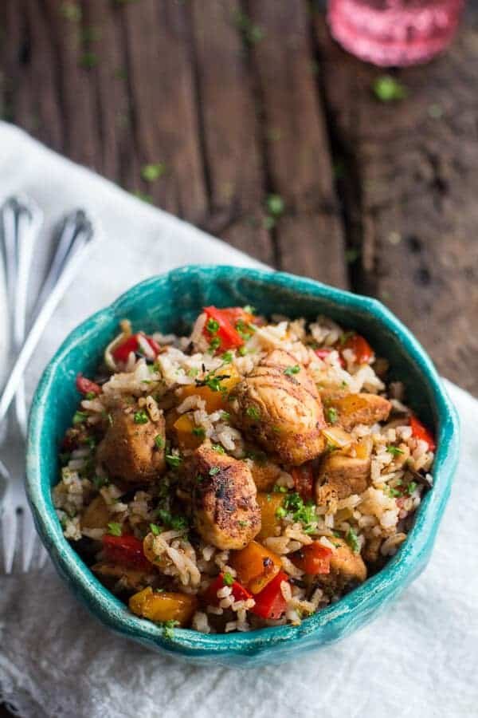

Home
Kickin' Chicken and Rice

Description
Back to the basics with this recipe. A long-time staple and favorite in my family. It can be as easy or complex as you want to make it. Below leans toward a more involved recipe but delicious it is all the same!
Ingredients
- 1/2 cup wild rice
- 3/4 cup basmati rice
- 2 1/2 cups water or low-sodium chicken broth
- Cajun Chicken and Peppers
- 1 pound boneless skinless chicken breast cut into bite size pieces
- 2 tablespoons olive oil
- 1 tablespoon cajun seasoning
- 1 tablespoon creole seasoning
- 1/2 tablespoon brown sugar
- 1 teaspoon sweet paprika
- 1 teaspoon pepper
- 1/2 teaspoon cayenne
- 1/2 teaspoon dried thyme
- 2 tablespoons soy sauce
- 1 large red pepper chopped
- 1 large orange pepper chopped
- 1/2 a onion chopped
- 2 cloves garlic minced or grated
- 1 ounce can diced tomatoes 14
- 2 tablespoon fresh parsley chopped, plus more for garnish
Steps
- To start the rice. Add the water to a medium size soup pot. Bring to a low boil and then add the rice and a pinch of salt. Stir to combine and then place the lid on the pot and turn the heat down to the lowest setting possible. Allow the rice to cook ten minutes on low and then turn the heat off completely and let the rice sit on the stove, covered for another 20 minutes (don't take any peeks inside!). After 20 minutes remove the lid and fluff the rice with a fork. Note that rice can cook differently for everyone, this is just what works for me.
- Meanwhile heat a large skillet on medium high heat and add 1 tablespoon olive oil. In a small bowl combine the cajun seasoning, creole seasoning, brown sugar, pepper, cayenne, sweet paprika and dried thyme.
- Add the chicken and the spice mixture to the skillet and give it a good toss. Then spread the chicken in an even layer and allow it to cook, without stirring for 2-4 minutes. Then stir the chicken and add the soy sauce, continue cooking another 5 minutes or until the chicken is browned all over and cooked through. Remove the chicken from the skillet and set aside.
- Add the remaining tablespoon of olive oil to the skillet. Add the red pepper, orange pepper, onion and garlic. Stir fry the veggies for about 5-10 minutes or until the onions are soft. Add the chicken back to the skillet and toss well. Now stir in the diced tomatoes and simmer until almost all the liquid has evaporated. Remove from the heat and add the chicken mixture to the rice. Toss well and serve! Garnish with chopped parsley if desired.
Source